Loose ends are normal
This is the last lecture of the 4TU course. The seven lectures before it covered the main aspects of developing a business plan for a technology-based startup. Other aspects also matter for the eventual success of a business, and which ones depends on the specific market, the competition and how novel the technology is.

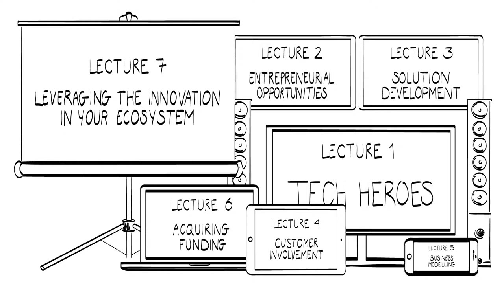
So your plan may still be very much under development, with loose ends whose details you would like to work out. Don't panic. A startup is a search by an individual, aimed at identifying the right business opportunity based on a sustainable business model. Treat the steps from the earlier lectures as an iterative process and not as a staged one. You will repeat some of them until you have your eureka moment.

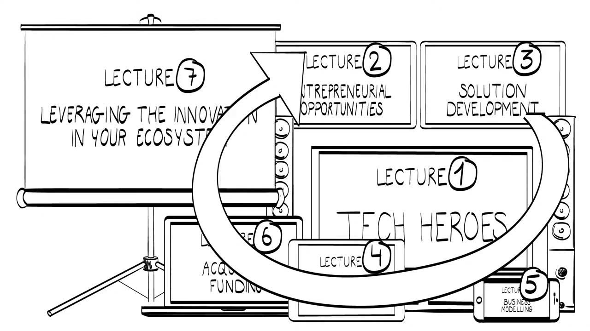
Skills you have and skills you borrow
Your skills and experience are essential. It helps to identify what you are good at with respect to the activities you want to pursue. If you lack the skills you need, collaborate with others who have them. You may have to share the benefits of your offer, but you can start, and you do not have to develop the skills or resources yourself. Developing them yourself takes longer, and by then others may have taken the opportunity.
This is why Professor Howard Stevenson, back in 1984, formulated entrepreneurship as the pursuit of opportunity beyond the resources controlled.
The value proposition
The opportunity, put more precisely, is the value proposition. Which pains exactly does your technology solve for your target customer? And does it make sense for the customer to buy your offer, because the gains far exceed the cost of purchasing it?

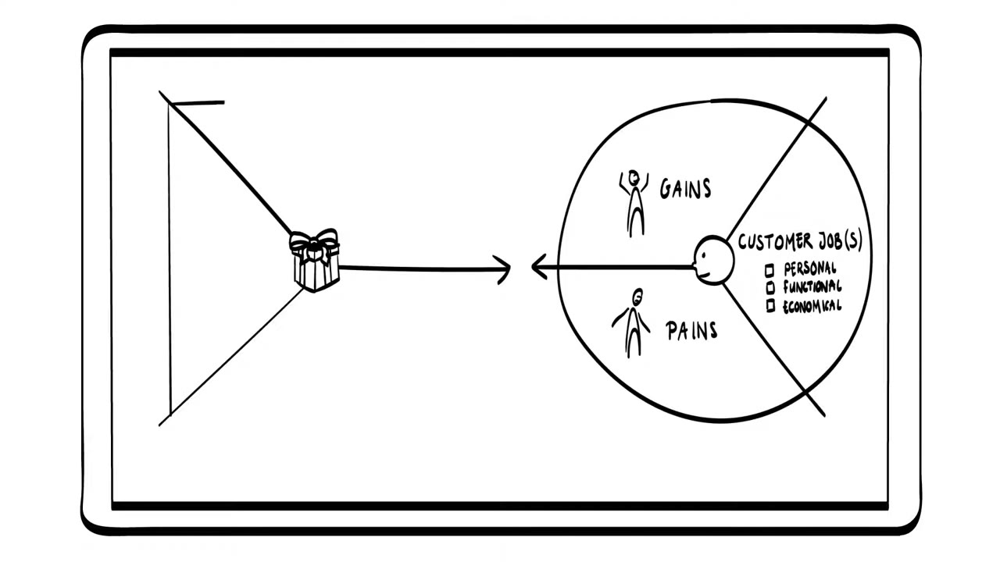
If your customer already uses an alternative, buying from you may bring switching costs and the cost of learning your new technology. Include these, and develop a customer business case that is convincing. Customizing is key in that business case.
In niche markets you may be able to ask higher prices. A niche helps you get a foothold in the market and gradually learn about customer needs and about how the technology holds up in practice. Keep in mind that your beachhead should leave you the opportunity to expand to other markets. That expansion provides the scale effects that cover the costs of technology development.
Margin and the minimum viable product
The difference between cost price and market price is important. Roughly, it is your margin. To make this margin large with minimal effort, focus on the minimum viable product: the features of your offer that provide the most value for your target customer.

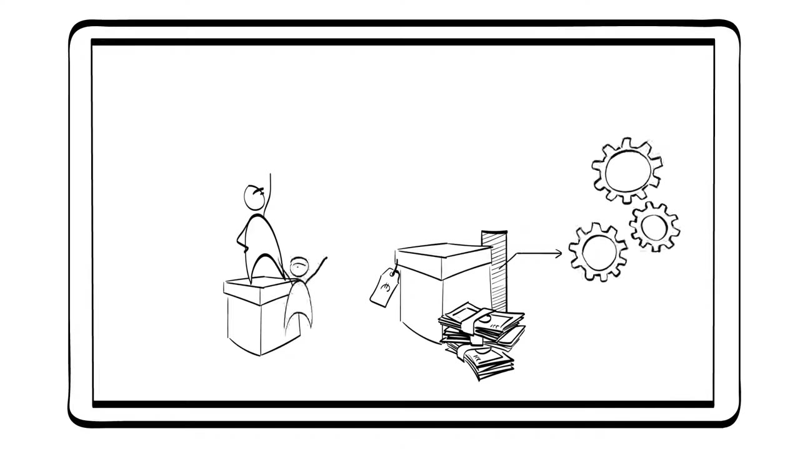

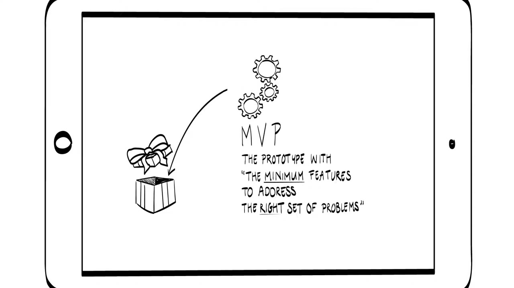
Early contact with customers helps you understand the job he or she does, so that you can focus on the features that are valued most. The minimum viable product keeps you from developing features that are valued less but still cost time and money.
Business model, partners and money
Once the MVP surfaces, you need a business model to deliver the offer and capture the value it generates. Various business model strategies are possible.

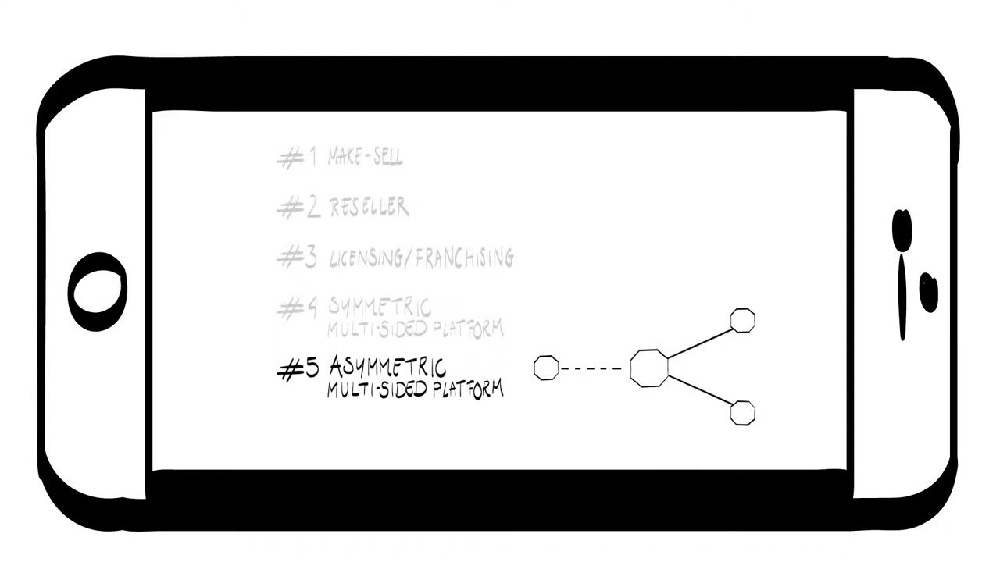
In delivering your offer you will often depend on business partners. They deliver value as well, and they also want to reap the benefits. The BE Connect tool (Business Model Ecosystem Connect tool) from lecture 5 helps you map your partners and how each one provides and captures value.
If you collaborate with partners, it would be great if they could cover the costs of prototyping or of scaling the business. You may still be at an early stage, though. Then you need family, friends or a business angel to help you invest in the first activities and carry out the proof of principle or proof of concept.

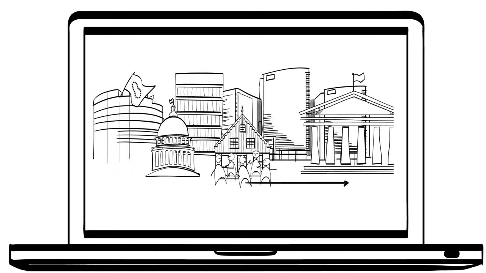
Complementarities
Lecture 7 showed how much business partners matter through the example of the e-book reader, where complementarities came from other organizations. With the ecosystem pie model you can identify the complementarities you need. They can make or break your innovation.

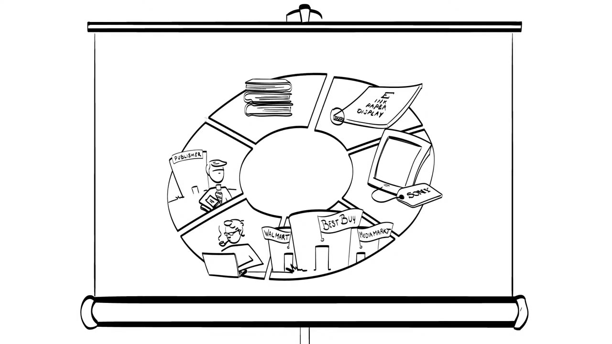

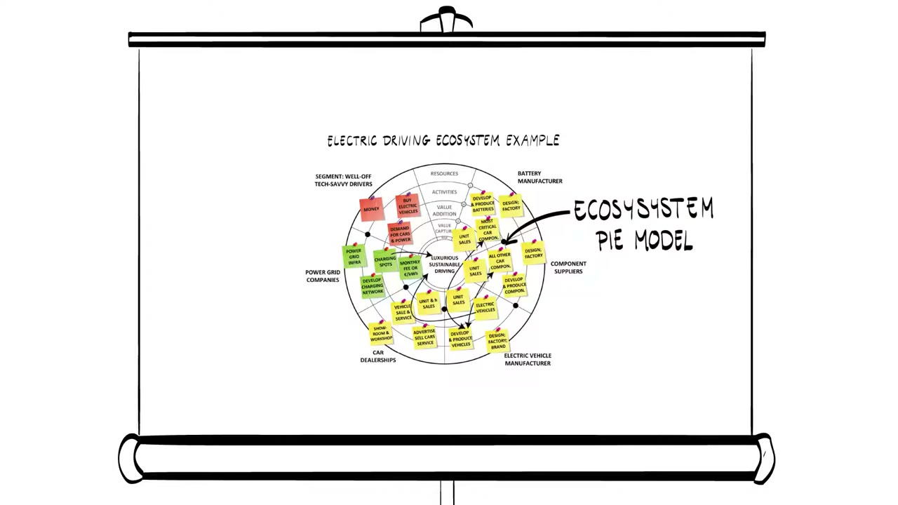
What the business plan is for
The lectures gave you the main aspects of building your business plan, and the assignments and exercises were there to develop your thoughts. The business plan is not an objective in itself. It is a means to an end, and the end is the founding of your startup.

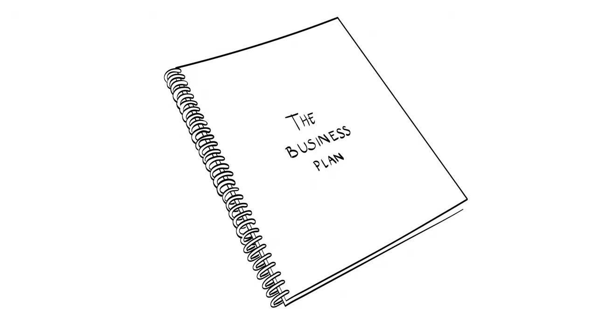
Drafting the plan structures your mind and makes you elaborate your arguments. The plan forces you to do four things:
- rethink the main business aspects,
- identify the critical skills and resources you need,
- integrate and align the goals,
- draft a planning with milestones, which gives a framework for the action that follows.
A plan is also essential to convince investors that you have given your idea considerable thought and that you are committed and dedicated to pursuing it.
The paradox
Founding a startup requires preparation and planning, yet it is basically an unplannable event. Starting your company takes a bias towards action and a sense of urgency. It also demands patience and persistence.

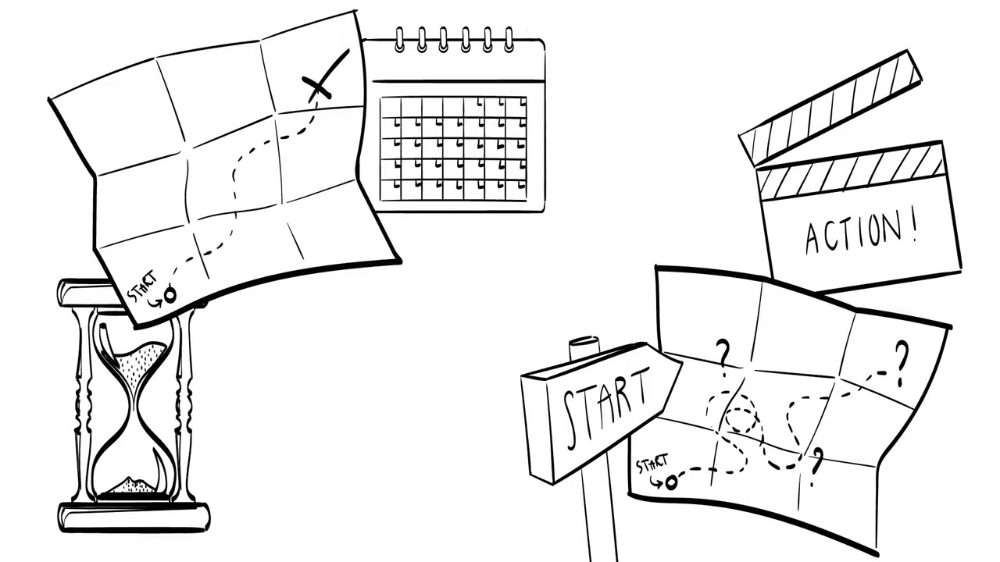
The start of your company will therefore be one in which composition and execution converge in time. The loose ends come together because you plan and act simultaneously.
The pitch
Your pitch to the jury should reflect that paradox. Jury members like to be shown carefully developed business plans, but they know very well that a plan is subject to change. That is why they put so much emphasis on the team behind the idea, and why they value how you handle uncertainty and change.

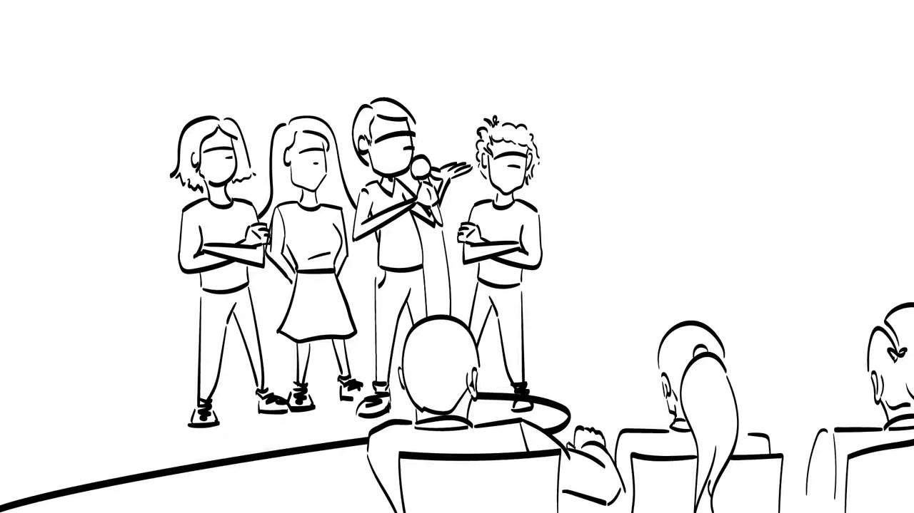
One document leads to the next
The aim of a pitch is to get a follow-up meeting with your potential investor. It should appeal enough that he or she is willing to take the time to read the executive summary, or two-pager, of the plan, or to invite you for a longer and more detailed conversation.
The executive summary in turn gives an overview of your offer and of how you will make money on it. It should invite the reader to spend more time and read the short business plan, which allows the investor to conduct some initial due diligence and check your plan. Your detailed business plan is mainly there to keep track of all the data you needed to make your decisions.

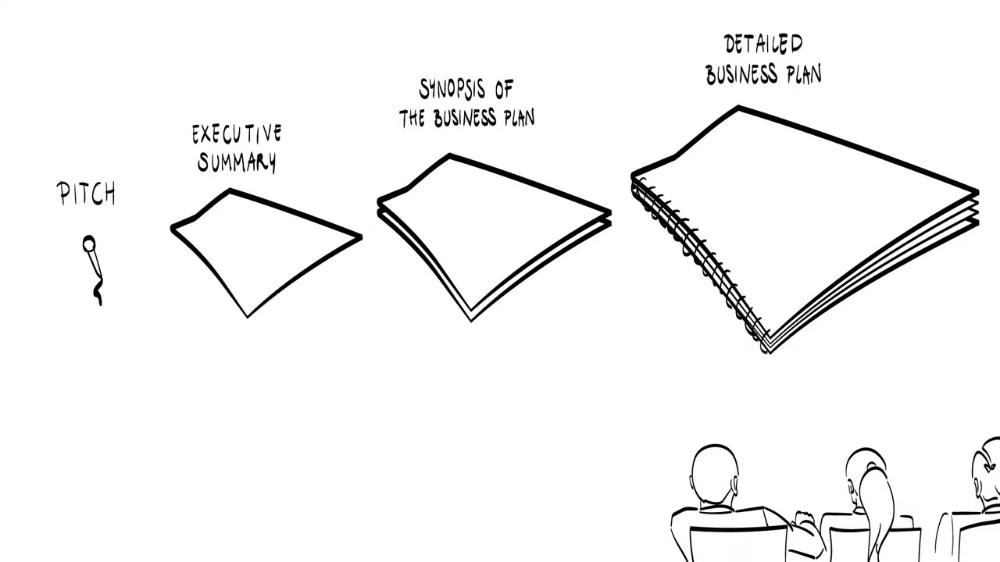
Two questions
When you present your plan in a pitch, you have to answer two questions: who cares, and why you?
"Who cares" means being precise about what your offer does for your target customer. Show customer empathy, and show that you know exactly what the customer business case is.
"Why you" involves your passion for the offer and the market, and your vivid understanding of your customer. Show confidence on top of that, without becoming stubborn or arrogant.

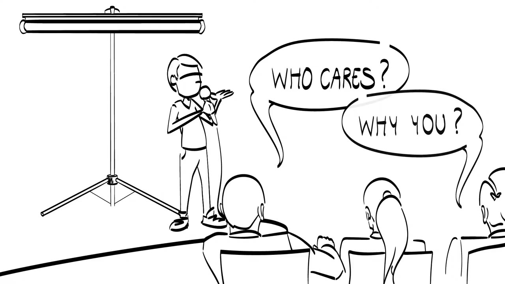
Get started
The lecture ends by stressing that you should not only plan your startup but plunge into it. Get started and design the business as you create it. Learn from others, update or pivot your plan when needed, and make sure it will fly.

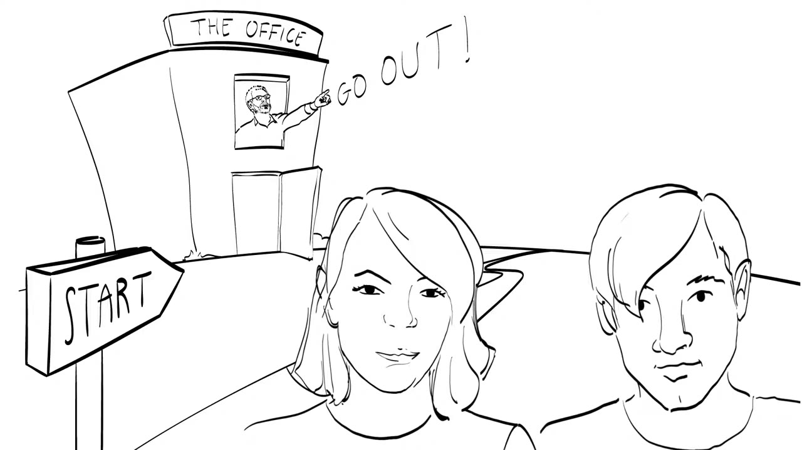
Leave your desk. Talk to people, your potential customers and business partners. Make sure your plan is viable, evidence-based and convincing to investors.
The makers hope to meet participants in one of their offline classes or in one of the incubator programs affiliated with the course. Submitting your business plan draws attention to your idea and gives you a chance to enter an incubation program at one of the universities involved.
Terms to know
- Startup
- A search by an individual, aimed at identifying the right business opportunity based on a sustainable business model.
- Entrepreneurship
- The pursuit of opportunity beyond the resources controlled (Howard Stevenson, 1984).
- Customer business case
- The customer's reason to buy: the gains set against the cost of purchasing, including switching costs and the cost of learning the new technology.
- Switching costs
- What it costs a customer who already uses an alternative to move to your offer.
- Beachhead
- The niche market where you get your first foothold. It should leave room to expand to other markets.
- Margin
- Roughly, the difference between cost price and market price.
- Minimum viable product (MVP)
- The features of your offer that provide the most value for the target customer. On screen: the prototype with the minimum features to address the right set of problems.
- Complementarities
- Contributions from other organizations that your innovation needs. They can make or break it, and the ecosystem pie model helps you identify them.
- Business plan
- A means to an end, the end being the founding of your startup. It structures your thinking and convinces investors that you are committed.
- Pitch
- A short presentation whose aim is a follow-up meeting with a potential investor. It answers "who cares?" and "why you?".
- Executive summary (two-pager)
- An overview of your offer and of how you will make money on it, written to make the reader want the short business plan.